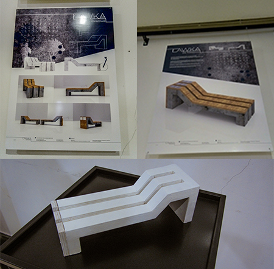

Ławka przeznaczona do umieszczenia na terenach otwartych, w parkach miejskich czy na skwerach. W niektórych miejscach na prawdę brakuje ławek i biegając, jadąc rowerem, czy po prostu będąc na spacerze nie ma gdzie usiąść i odpocząć. Zamiast stawiać zwykłą ławkę, warto zastanowić się nad bardziej zaawansowaną wersją tego znanego nam przecież przedmiotu. Zaprezentowana ławka oferuje możliwość oparcia roweru, wjeżdżając kołem we wcięcie, historyjkę związana z miejscem jej położenia, czy opis w języku Braille'a dla niewidomych. Zasilana jest panelami słonecznymi.

Promotorzy pracy dyplomowej:
- Dr. sztuk Krzysztof Groń
- Mgr. sztuki Aleksandra Olczak
- Mgr. Łukasz Szubart
- Inż. arch. Kacper Groń
Projektant:
- Beata Teler